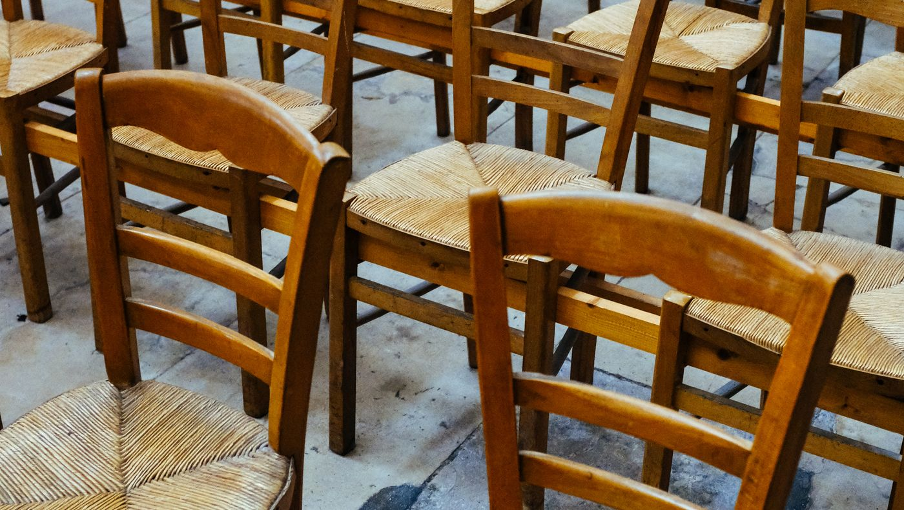
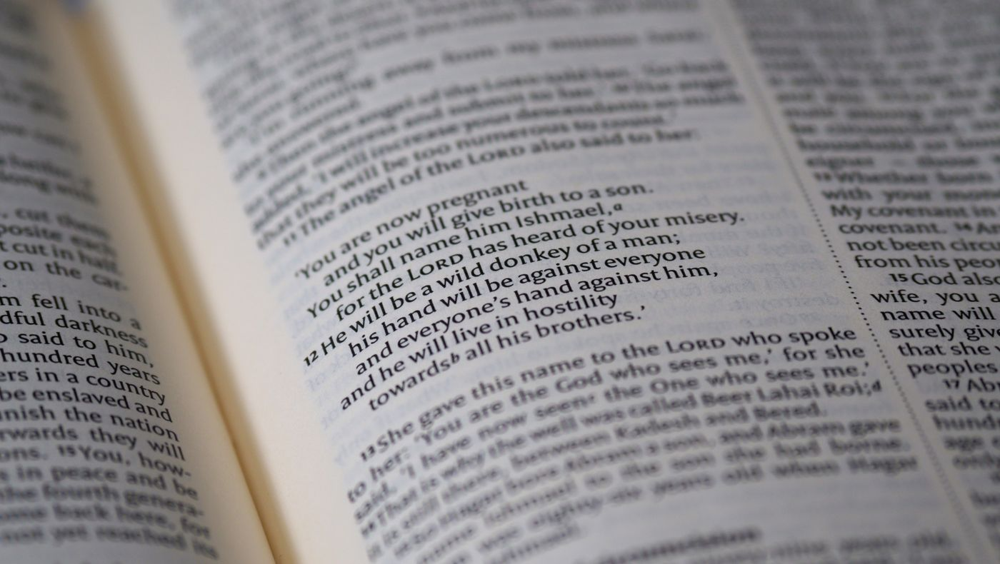
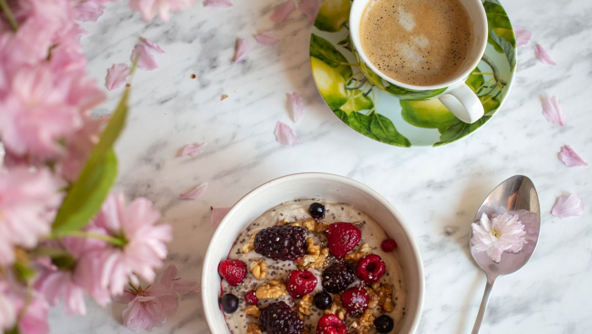
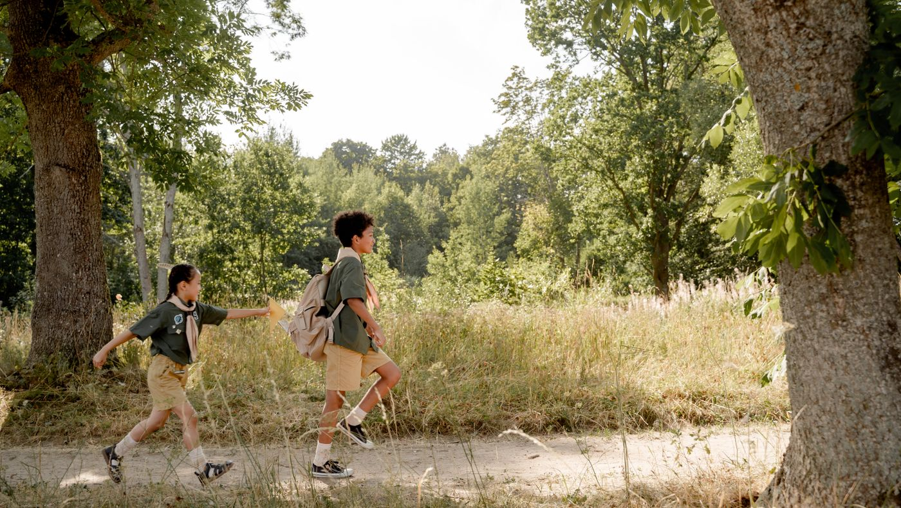

Gruppen und Kreise
Die Gemeinde lebt vom Miteinander. Vierzehn Angebote für jede Lebensphase, von den Jüngsten bis zu den Ältesten.

Gottesdienst GLV: Glauben, Leben, Verstehen
GLV: Glauben, Leben, Verstehen

Bibelstunde Hauskreise
Hauskreise

Kaffee und Müsli Frauengebetskreis Männertreffen Seniorenarbeit Kindergottesdienst Knallerbsen: Jungschar
Knallerbsen: Jungschar

Wilde Füchse: Jungschar Biblischer Unterricht
Crossroad
Biblischer Unterricht
Crossroad
Gemeinde gemeinsam
Gottesdienst
Ganze GemeindeDas Herzstück unseres Gemeindelebens: Lieder, Gebet und Gottes Wort. Einmal im Monat mit Abendmahl.
Mehr erfahrenGLV: Glauben, Leben, Verstehen
Ganze GemeindeAlle vierzehn Tage denken wir über Glaubensfragen nach, mit Raum für Diskussion und Austausch.
Mehr erfahrenBibelstunde
Jedes AlterGemeinsam singen, in der Bibel lesen und die Botschaft in den Alltag übertragen.
Mehr erfahrenHauskreise
AlleBunt gemischte Kleingruppen unter der Woche. Leben teilen, Nachfolge leben, im Glauben wachsen.
Mehr erfahrenFrauen, Männer, Senioren
Kaffee und Müsli
Frauen jeden AltersDas Frauenfrühstück der Gemeinde, mit Lobpreis, biblischem Impuls und persönlichem Austausch.
Mehr erfahrenFrauengebetskreis
Frauen der GemeindeWir beten für Anliegen von Gemeinde und Mission, singen, lesen in der Bibel und tauschen uns aus.
Mehr erfahrenMännertreffen
Männer jeden AltersMehrmals im Jahr: gutes Essen, Sport, Gespräche und Themen, die uns als Männer betreffen.
Mehr erfahrenSeniorenarbeit
Ab dem RuhestandsalterBesuchsdienst und Seniorenkaffee mit Andacht, Gemeinschaft und Begleitung im Alltag.
Mehr erfahrenKinder und Jugend
Kindergottesdienst
Kinder von 3 bis 12Fröhliche Lieder, Geschichten aus der Bibel und ein erlebnisreiches Bastel- und Spieleprogramm.
Mehr erfahrenKnallerbsen: Jungschar
Ab 5 JahrenSpannende Geschichten aus der Bibel, singen, spielen, basteln und backen.
Mehr erfahrenWilde Füchse: Jungschar
4. bis 7. SchuljahrMusik, Spiele, Ausflüge und biblische Geschichten. Jährliches Highlight ist die Kinderfreizeit.
Mehr erfahrenBiblischer Unterricht
6. und 7. SchuljahrEineinhalb Jahre in fester Gruppe auf der Suche: Was ist die Bibel? Wer ist Gott?
Mehr erfahrenCrossroad
Teens ab dem 8. SchuljahrUnser Teen- und Jugendkreis. Alltag teilen, Freundschaft leben, über Gott nachdenken.
Mehr erfahrenKreisjugend
Junge ErwachseneSingles und junge Ehepaare treffen sich für Gemeinschaft, Glauben und gemeinsame Erlebnisse.
Mehr erfahrenFragen zu einer Gruppe? Wende dich direkt an die Gruppenleitung oder schreib uns eine Nachricht.
Kontakt aufnehmen